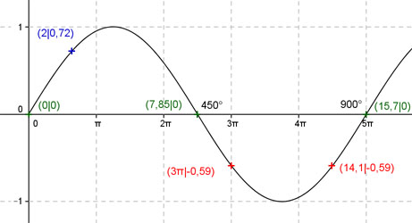

Aufgabe 143 Ergänzen Sie die Wertetabelle für x zwischen 0 und 5π: y = sin 0,4x x 2 3π oder 14,1 y 0,72 -0,59 Amplitude = 1 ; Periode = 2π/0,4 = 5π Berechnung der Nullstellen: sin 0,4x = 0 ---> Substitution 0,4x = u --> sin u = 0 --> u = k * π mit k = 0, 1, 2, ... --> Rücksubstitution liefert 0,4x = k * π |:0,4 --> x = k * 2,5π N1 liegt bei 0 oder 0°, N2 bei π/0,4 = 2,5π oder 450°, N3 bei 2π/0,4 = 5π oder 900°.  Funktionswert an einer Stelle x ermitteln: x = 2 f(2) = sin (0,4 * 2) = sin (0,4 * 114,6°) = 0,72 gerundet. Berechnung der x-Werte für y = f(x) = -0,59: f(x) = - 0,59 eingesetzt, existiert zweimal zwischen (5/2)π bzw. 450° und 5π bzw. 900° (siehe Graph). sin 0,4x = -0,59 --> 0,4x = arc sin (-0,59) = -0,63 --> x = -1,57 oder -π/2 gerundet, liegt nicht im Bereich zwischen 0 und 2π, --> x1 = ((5/2)π + π/2) = 3π oder x2 = (5π - π/2) = 14,1 gerundet und α1 = 540° oder α2 = 810°.